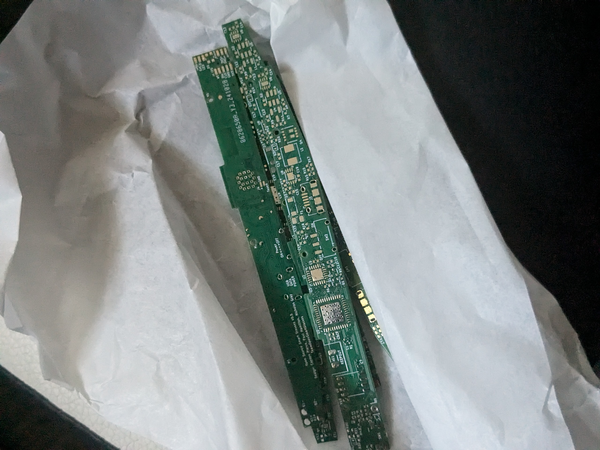
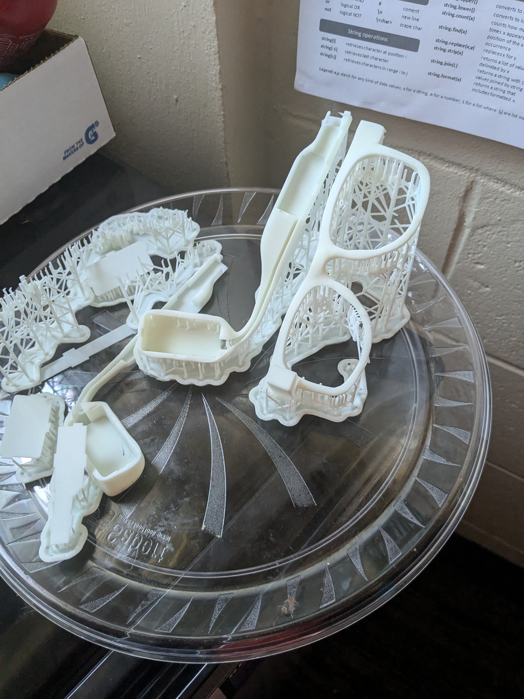

Project Title
At Georgia Tech, we’re all about bringing tech to life, which is why I'm excited to present my project, “Smart Glasses with Integrated Display.” This wearable tech is designed to let users see digital info—like notifications or simple text—right within their eyeglasses, all without blocking their natural view. Think of it as augmented vision on a sleek, everyday scale, bridging digital content with real-world interactions in a way that feels effortless. This could be a game-changer for both daily life and professional settings, where staying connected matters. My goal here is to develop a prototype that’s compact, lightweight, and as inconspicuous as possible, using accessible materials. I’m focusing on a small, clear display embedded within the lens, paired with a user interface that delivers just the essentials—no overwhelming streams of data, just what’s needed. The experience would be like taking a quick look at your phone screen, but without the phone, right in your line of sight, hands-free.
 